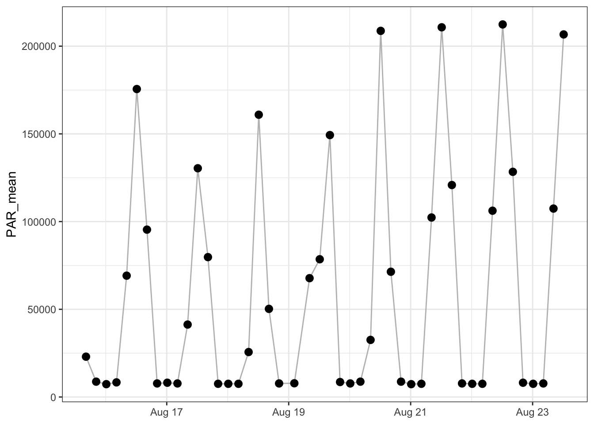
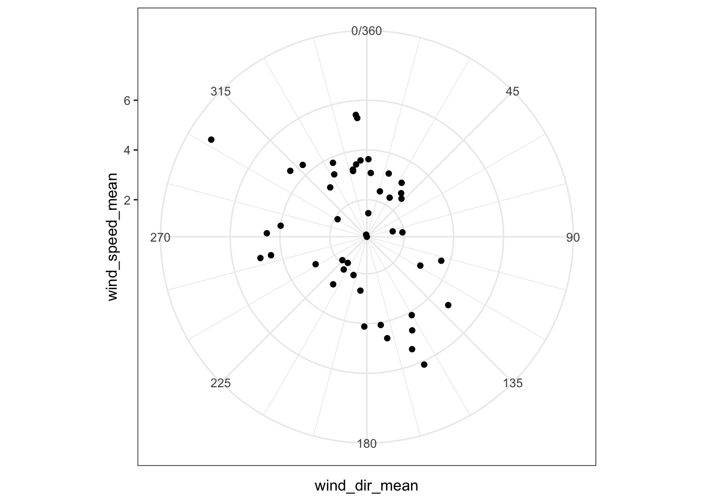
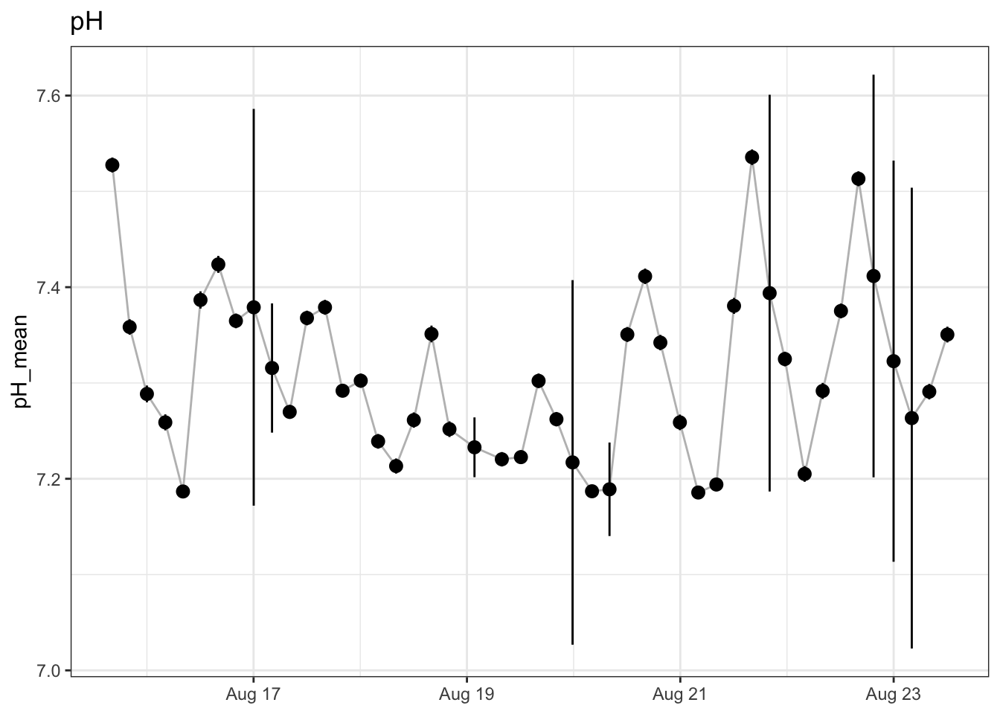
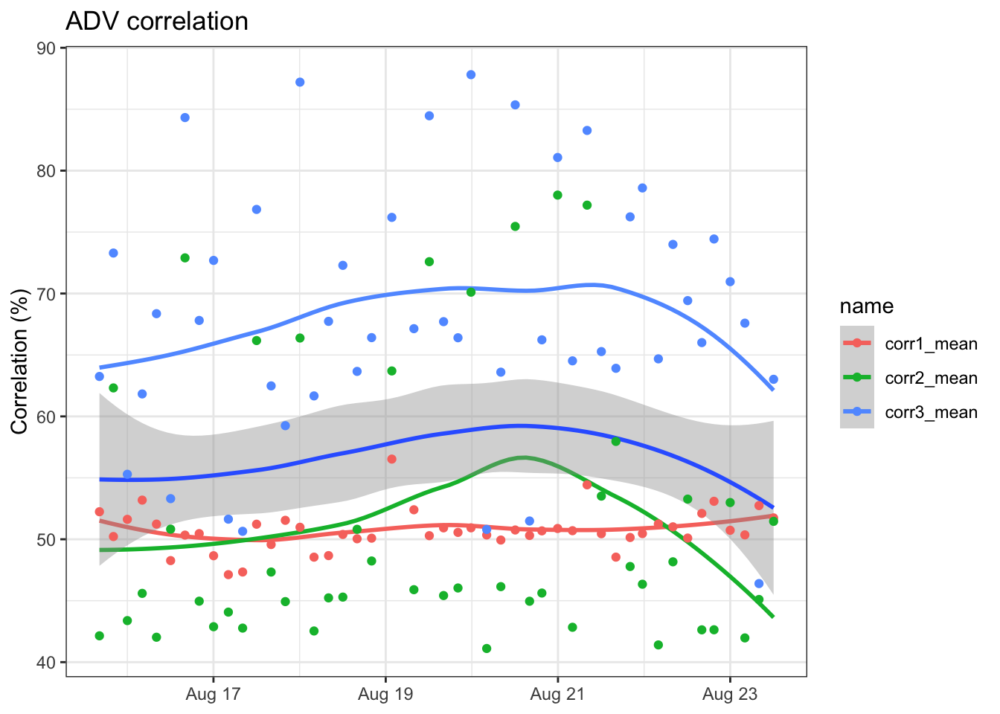

library(tidyverse)
library(rvest)
library(lubridate)
library(mlabtools)
library(shiny)
library(htmlwidgets)
theme_set(theme_bw())
# RINKO_CALS
rinko_cals <- list(
A = -1.219367e1,
B = 2.134089e1,
C = -3.559172e00,
D = 6.691104e-01
)
# plotting function
plot_mean <- function(data, parameter, err) {
data |>
ggplot(aes(x = timestamp_mean,
y = {{parameter}},
ymin = {{parameter}} - {{err}},
ymax = {{parameter}} + {{err}})) +
geom_line(color = "gray") +
geom_pointrange() +
labs(x = NULL)
}Parse LECS Web
Get and parse data sent to LECS website. Data from 2024-01-20 to present.
Get Data
Get and process data
Get data from website.
Use start_date parameter to limit download.
df_raw <- read_lecs_web(start_date = params$start_date)Add row, type and line number
df <- lecs_add_metadata(df_raw)Separate data into post times, met, status, and adv data
post_times <- lecs_post_times(df)
met <- lecs_met_data(df)Warning: Expected 9 pieces. Additional pieces discarded in 11 rows [1, 24, 26, 27, 28,
33, 43, 46, 68, 71, 92].status <- lecs_status_data(df)Warning: Expected 21 pieces. Additional pieces discarded in 185 rows [5, 16, 19, 20, 25,
26, 38, 53, 61, 63, 87, 91, 99, 127, 128, 148, 151, 152, 156, 162, ...].adv_data <- lecs_adv_data(df, rinko_cals)Quick ADV time alignment
find_nearest_row <- function(row_number) {
return(which.min(abs(status$row_num - row_number)))
}
adv_data$timestamp <- status$timestamp[sapply(adv_data$row_num, find_nearest_row)]Real ADV time alignment
time per line
bm <- bench::mark(adv_data <- make_lecs_ts(df, status, adv_data))
bmFilter bad data
status_qc <- status |>
filter(soundspeed > 1450,
adv_day < 32, adv_month > 0, adv_month < 13,
adv_min < 61, adv_hour < 24, adv_year < 100,
timestamp > "2023-01-01",
timestamp < "2024-10-01")
adv_data_qc <- adv_data |>
filter(count >= 0, count < 256,
ana_in2 == 1,
timestamp > "2023-01-01",
timestamp < "2024-10-01")Calculate per-send means
met_mean <- met |>
group_by(send) |>
summarise(across(everything(),
list(mean = ~ mean(.x, na.rm = TRUE),
sd = ~ sd(.x, na.rm = TRUE))))
status_mean <- status_qc |>
select(send, timestamp, bat) |>
group_by(send) |>
summarise(across(c(timestamp, bat),
list(mean = ~ mean(.x, na.rm = TRUE),
sd = ~ sd(.x, na.rm = TRUE))))
adv_data_mean <- adv_data_qc |>
select(send, missing, timestamp, pressure, pH, temp, oxy) |>
group_by(send) |>
summarise(across(everything(),
list(mean = ~ mean(.x, na.rm = TRUE),
sd = ~ sd(.x, na.rm = TRUE))),
missing_frac = sum(missing, na.rm = TRUE) / (sum(missing, na.rm = TRUE) + n()),
N = n())Last post was 2024-01-27 16:11:12
Met data
PAR
met_mean |>
plot_mean(PAR_mean, PAR_sd)Warning: Removed 1 rows containing missing values (`geom_segment()`).
Wind Speed
met_mean |>
plot_mean(wind_speed_mean, wind_speed_sd) +
labs(title = "Wind Speed",
y = "Wind Speed (m/s)")Warning: Removed 26 rows containing missing values (`geom_line()`).Warning: Removed 26 rows containing missing values (`geom_pointrange()`).
Wind direction
ggplot(met_mean, aes(wind_dir_mean, wind_speed_mean)) +
geom_point() +
coord_polar() Warning: Removed 26 rows containing missing values (`geom_point()`).
Status
Battery
status_mean |>
plot_mean(bat_mean, bat_sd) +
geom_smooth() +
labs(title = "Battery Voltage",
y = "Volts")`geom_smooth()` using method = 'loess' and formula = 'y ~ x'
ADV Data
pressure
adv_data_mean |>
plot_mean(pressure_mean, pressure_sd) +
labs(title = "Pressure",
y = "Pressure (dbar)")
pH
Data issues cause wild flyers
adv_data_qc |>
ggplot(aes(timestamp, pH)) +
geom_point()
adv_data_mean |>
plot_mean(pH_mean, pH_sd) +
labs(title = "pH")
Temperature
adv_data_mean |>
plot_mean(temp_mean, temp_sd) +
labs(title = "Temperature",
y = "Temp (C)")
Oxygen
adv_data_mean |>
plot_mean(oxy_mean, oxy_sd) +
labs(title = "Oxygen")
Missing data
Missing data by row. Determined by looking at gaps in cycle number.
adv_data |>
ggplot(aes(row_num, missing)) +
geom_point() +
labs(title = "Missing data by row",
x = NULL,
y = "Missing")Warning: Removed 49 rows containing missing values (`geom_point()`).
Fraction of data missing. Ratio of total missing rows (as above) to expected rows (rows in send + sum of missing rows).
adv_data_mean |>
ggplot(aes(timestamp_mean, missing_frac)) +
geom_point() +
labs(title = "Fraction missing by send",
x = NULL,
y = "Fraction missing")
Most missing data is in first 25 lines per send. This is the beginning of a new file. This is likely a gap as DAQ gets started again after pausing for send. The following plot is missing fraction without the first 25 lines of each send.
adv_data_qc <- adv_data |>
filter(count >= 0, count < 256,
ana_in2 == 1,
line > 25,
timestamp > "2023-01-01",
timestamp < "2024-10-01")
adv_data_mean <- adv_data_qc |>
select(send, missing, timestamp, pressure, pH, temp, oxy) |>
group_by(send) |>
summarise(across(everything(),
list(mean = ~ mean(.x, na.rm = TRUE),
sd = ~ sd(.x, na.rm = TRUE))),
missing_frac = sum(missing, na.rm = TRUE) / (sum(missing, na.rm = TRUE) + n()),
N = n())adv_data_mean |>
ggplot(aes(timestamp_mean, missing_frac)) +
geom_point() +
labs(title = "Fraction missing by send, without first 25 lines",
x = NULL,
y = "Fraction missing")
Post times
knitr::kable(post_times)| timestamp | row_count |
|---|---|
| 2024-01-19 20:11:12 | NA |
| 2024-01-20 00:11:12 | 501 |
| 2024-01-20 04:11:12 | 501 |
| 2024-01-20 08:11:12 | 501 |
| 2024-01-20 12:11:12 | 501 |
| 2024-01-20 16:11:12 | 501 |
| 2024-01-20 20:11:12 | 501 |
| 2024-01-21 00:11:12 | 501 |
| 2024-01-21 04:11:12 | 501 |
| 2024-01-21 08:11:12 | 501 |
| 2024-01-21 12:11:12 | 501 |
| 2024-01-21 16:11:12 | 501 |
| 2024-01-21 20:11:12 | 501 |
| 2024-01-22 00:11:12 | 501 |
| 2024-01-22 04:11:12 | 501 |
| 2024-01-22 08:11:12 | 501 |
| 2024-01-22 12:11:12 | 501 |
| 2024-01-22 16:11:12 | 501 |
| 2024-01-22 20:11:12 | 501 |
| 2024-01-23 00:11:12 | 501 |
| 2024-01-23 04:11:12 | 501 |
| 2024-01-23 08:11:12 | 501 |
| 2024-01-23 12:11:12 | 501 |
| 2024-01-23 14:23:36 | 497 |
| 2024-01-23 16:11:12 | 501 |
| 2024-01-23 20:11:12 | 501 |
| 2024-01-24 00:11:12 | 501 |
| 2024-01-24 04:11:12 | 501 |
| 2024-01-24 08:11:12 | 501 |
| 2024-01-24 12:11:12 | 501 |
| 2024-01-24 16:11:12 | 501 |
| 2024-01-24 20:11:12 | 501 |
| 2024-01-25 00:11:12 | 501 |
| 2024-01-25 04:11:12 | 501 |
| 2024-01-25 08:11:12 | 501 |
| 2024-01-25 12:11:12 | 501 |
| 2024-01-25 16:11:12 | 501 |
| 2024-01-25 20:11:12 | 501 |
| 2024-01-26 00:11:12 | 501 |
| 2024-01-26 04:11:12 | 501 |
| 2024-01-26 08:11:12 | 501 |
| 2024-01-26 12:11:12 | 501 |
| 2024-01-26 16:11:12 | 501 |
| 2024-01-26 20:11:12 | 501 |
| 2024-01-27 00:11:12 | 501 |
| 2024-01-27 04:11:12 | 501 |
| 2024-01-27 08:11:12 | 501 |
| 2024-01-27 12:11:12 | 501 |
| 2024-01-27 16:11:12 | 501 |
Lines per post
post_times |>
ggplot(aes(timestamp, row_count)) +
geom_point() +
labs(title = "Lines per post",
x = NULL,
y = "Lines")Warning: Removed 1 rows containing missing values (`geom_point()`).